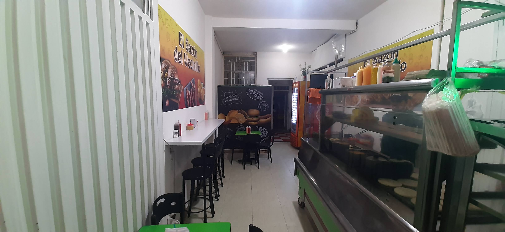
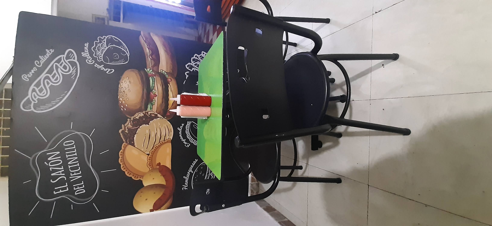

En los rincones humildes y vibrantes del barrio Aures 2, una chispa de creatividad culinaria comenzó a forjarse. Fue en ese lugar, donde lo cotidiano se transforma en algo extraordinario, que el Sandon del Vecinillo tomó vida. Inspirado por la simplicidad y el hogar, pero con una visión que trasciende lo común, se creó un plato que, aunque carente del característico sabor costeño, conquistó paladares con una mezcla inusual de ingredientes y sazón que solo un bogotano podría imaginar.
La creación del Sandon del Vecinillo es el reflejo de un anhelo compartido: ofrecer a cada persona, no solo comida, sino un pedazo de historia, un bocado de recuerdos. Las papas rellenas que te transportan a las cocinas de abuelas, las arepas rellenas cargadas de la esencia familiar, los perros y hamburguesas que llevan el toque especial de quienes cocinan con el corazón y las salchipapas, un plato que es el abrazo culinario del día a día.
Cada ingrediente del Sandon del Vecinillo es una combinación precisa entre lo rolo y lo popular, un equilibrio entre lo sencillo y lo sublime. Aquí, lo hogareño no es solo una palabra, sino una filosofía de vida; es el respeto por el barrio, la tierra y la gente que trabaja para ofrecer lo mejor de sí. El sabor bogotano se expresa en cada plato, con un toque que, aunque alejado de las costas, representa la identidad de una ciudad diversa, siempre en busca de crear algo único.
El Sandon del Vecinillo no es solo una comida, es un ritual de encuentro, donde el aroma te invita a sentarte, a compartir una historia, a sentirte en casa. Porque más que un platillo, es la esencia de un barrio, una cultura, y una pasión que se sirve en cada mesa.